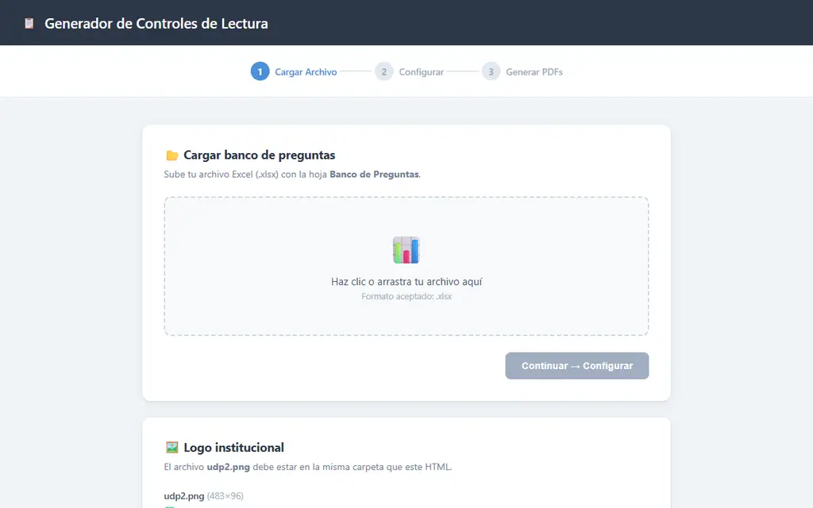
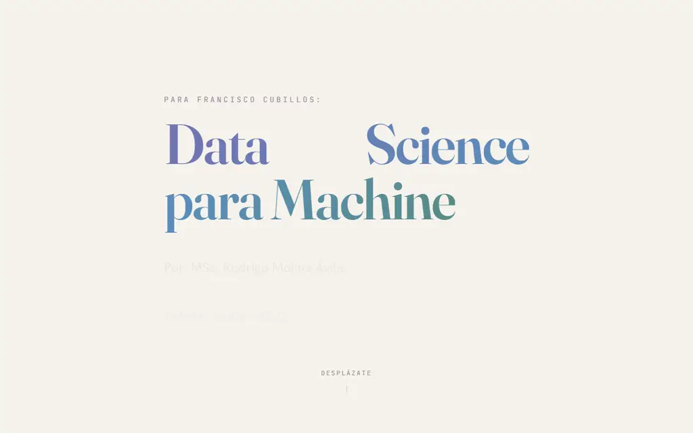
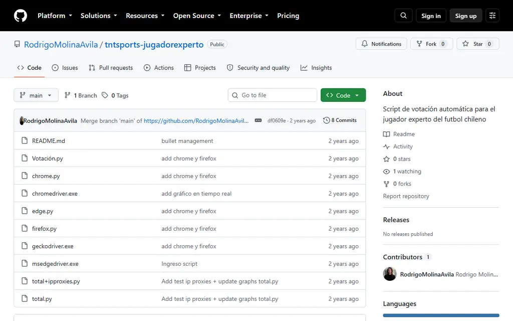
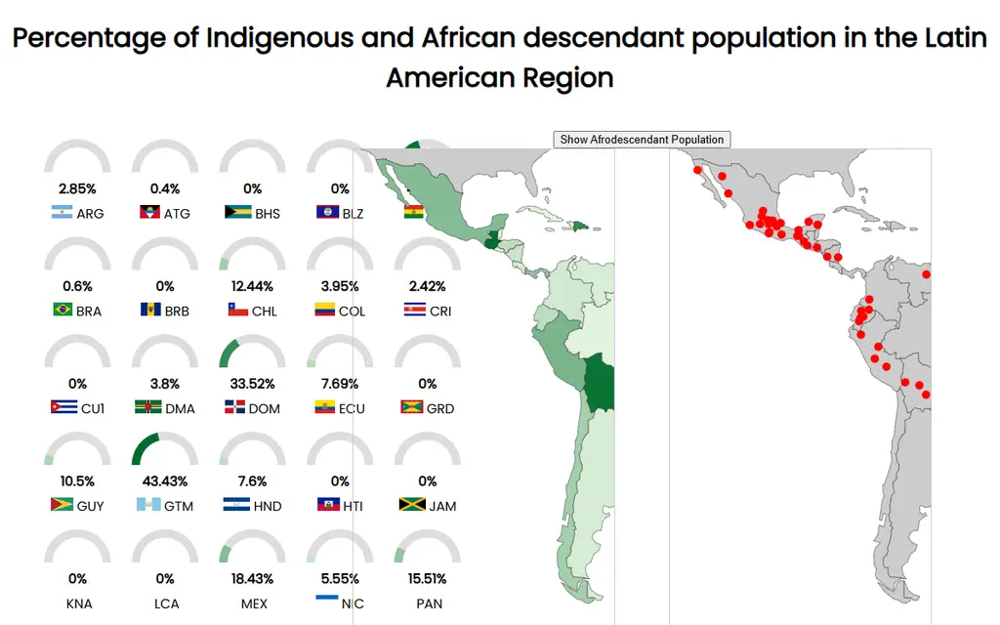
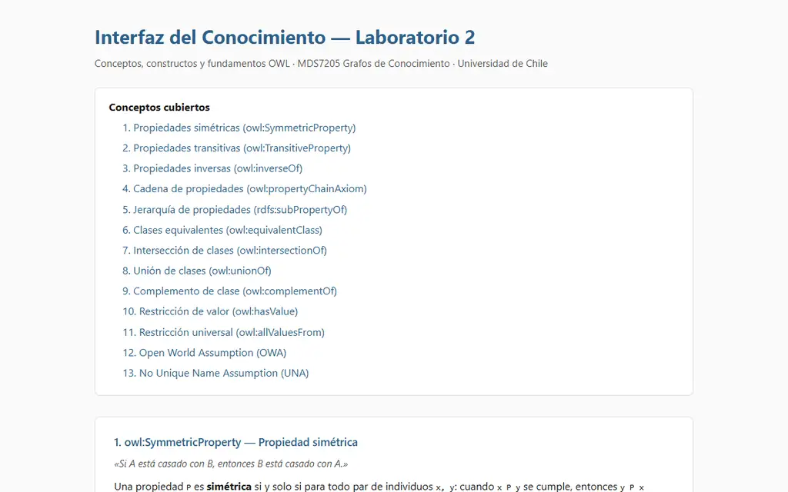
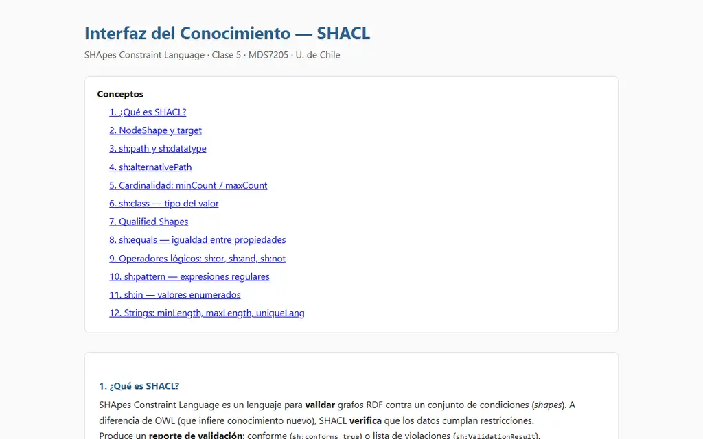
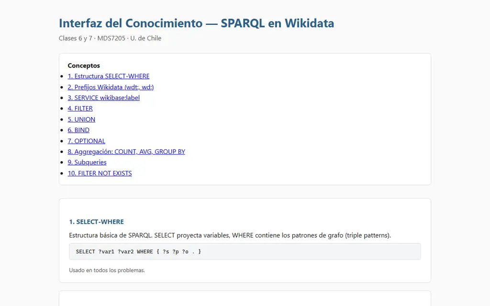
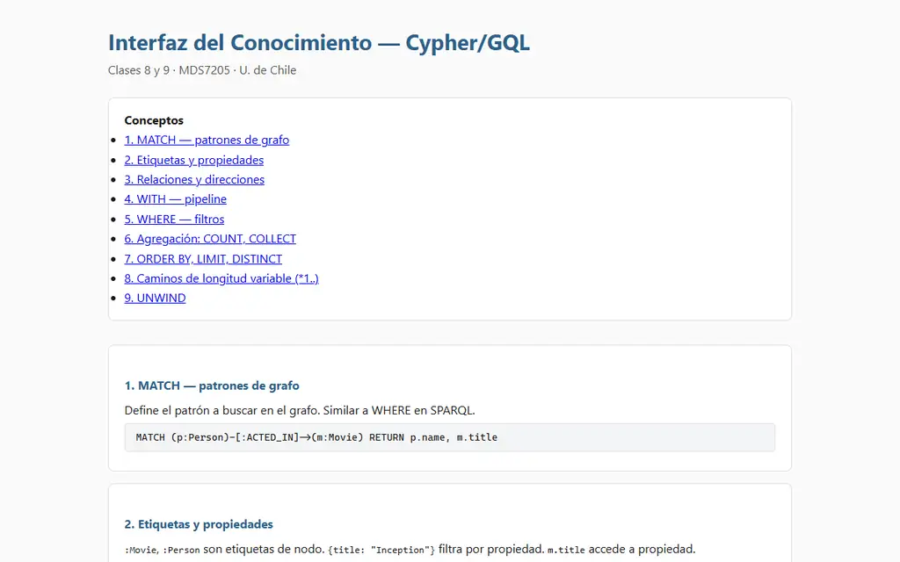

Rodrigo Molina Ávila
Data scientist y sociólogo computacional en IDIA, IMFD y la Universidad de Chile.
Origen
Partí estudiando Sociología en la Universidad Andrés Bello con una pregunta simple e insidiosa: por qué la gente termina haciendo lo que hace. Salí con título y Licenciatura con Distinción, y una sospecha que nunca me abandonó: casi nada de lo social es casualidad.
La sociología de campo llegó temprano. En 2018, práctica profesional en Gendarmería de Chile: bases de datos, instrumentos y pruebas estadísticas, y trabajo de campo dentro de las cárceles Santiago 1 y CCP Puente Alto. Ver al Estado cara a cara cambia cómo uno lee las estadísticas.
Entre 2021 y 2023, tres proyectos de investigación: Grounded Theory para la desigualdad geográfica en el FONDECYT Regular 11200602, una base de 48.000+ publicaciones sobre think tanks en el Postdoc 3210579, y la Convención Constituyente con el Mini COES: etnografía en el Ex Congreso y redes de expertos presentadas en el IX Congreso COES.
En 2024, el salto computacional: Magíster en Ciencia de Datos en la FCFM y Data Scientist en la IDIA, con vínculos al IMFD. Mi tesis: un grafo de conocimiento de 3.143 becarios/as ANID que pregunta si el género y la clase social de origen estructuran la producción científica chilena. Aprobada, con paper en camino y plataforma pública.
En 2026: consultoría cualitativa para el nuevo Magíster en IA, docencia en Grafos de Conocimiento e Information Retrieval, ayudantías en Fundamentos de la Sociología UDP, y este sitio, que es también un grafo.
«La sociología me dio las preguntas; los datos, la disciplina para responderlas.»
Hover o clic en un hito.
Interrogando la Academia
Un grafo de conocimiento en Neo4j reconstruye la trayectoria de 3.143 becarios/as doctorales ANID: 3M+ relaciones de coautoría, 237 tópicos BERTopic y comunidades Louvain/Leiden para responder si el género y la clase social de origen estructuran lo que la ciencia chilena produce.
Think Tanks en Tiempos de Crisis
40.000+ documentos de 20+ instituciones procesados con scraping y NLP; BERTopic y análisis de redes para mapear la influencia del conocimiento experto durante la crisis chilena (2019–2023).
Evaluación del Magíster en IA
Evaluación cualitativa del nuevo Magíster Profesional en IA: focus group con egresados, entrevistas a industria y un pipeline de diarización y NLP con evidencia navegable de punta a punta.
Modelos predictivos becarios ANID
XGBoost y SHAP sobre trayectorias académicas: qué explica el éxito de una beca doctoral. Dashboards ejecutivos para autoridades universitarias y ANID.
Evaluación del Programa de Valorización a la Investigación
Consultor cuantitativo para la evaluación de resultados del Programa de Valorización a la Investigación (ANID): propuesta técnica elaborada para la Subsecretaría de Ciencia, Tecnología, Conocimiento e Innovación. Mayo 2025.
UDP Control Generator
Genera controles de lectura para Fundamentos de la Sociología: preguntas, orden aleatorio y salida lista para aplicar.

Prediction Guide
Una guía de data science escrita para un amigo: qué significa aprender de datos, el pipeline como secuencia sagrada y el salto de correlación a causalidad.

tntsports-jugadorexperto
Voto automático para el «jugador experto» de TNT Sports.
jubilado con honores: ahora piden login por voto
MapViz
Mi primera creación en HTML: población indígena y afrodescendiente de Latinoamérica, país por país.

Plataforma web para acceso a datos sobre financiamiento de la ciencia en Chile
Profesor co-guía de la memoria de título de Matías Vega (agosto 2025 a junio 2026). El resultado es la plataforma pública con los datos del grafo de becarios ANID, abiertos y consultables.
Ver plataforma ↗Interfaces de laboratorio, MDS7205 Grafos de Conocimiento (U. de Chile)
Como ayudante del curso construí una interfaz interactiva por laboratorio: el concepto, la sintaxis y el ejercicio en una sola página. El raíl avanza lateralmente con el scroll; clic abre la interfaz completa.
Grafos de Conocimiento, laboratorio a laboratorio




Clases de ayudantía, Fundamentos de la Sociología (Bachillerato UDP)
Cinco clases para preparar los controles de lectura del primer semestre 2026: cada una con sus lecturas, sus autores y el repaso listo para aplicar.
Posters y reportes, en PDF
Presentaciones
Untangling the Academic Network: Analyzing Scientific Trajectories with Graphs and NLP
R. Molina Ávila, S. Ferrada Aliaga (IDIA, IMFD).
Think Tanks and Political Crises in Chile, 2011–2022
Agradecido por contribuciones (FONDECYT POSTDOC 3210579 / COES). doi:10.1017/lar.2026.10142